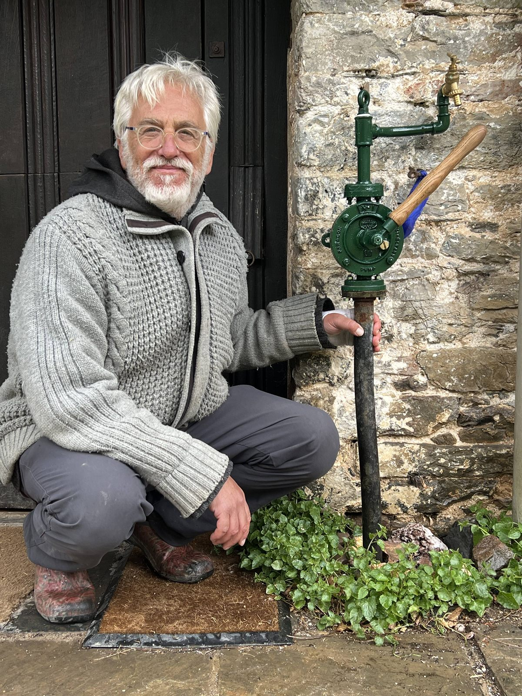
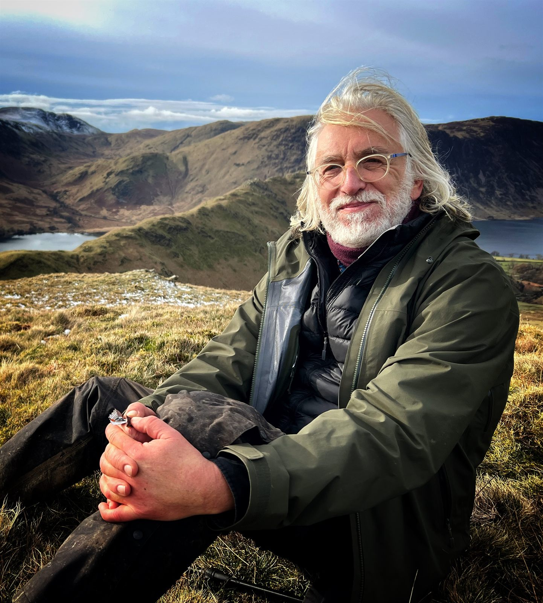

Process Oriented Psychologist (Psychotherapist) | Guiding individuals and groups with heartful presence since 1991


I've practiced Process Oriented Psychology developed by Dr. Arnold Mindell and colleagues worldwide—since 1991. I now mainly work online and in person (Dartington, Devon, UK) as an adult psychotherapist, teacher and facilitator, and have also worked for years as a child psychotherapist running services in the NHS. From all walks of life, whoever you are and wherever you come from, I meet you with heartful presence.
From all walks of life, whoever you are and wherever you come from, I meet you with heartful presence. My work is informed by wide ranging areas such as nature and ecology, trauma, dreaming, non-duality, attachment, child development, indigenous wisdom, intersectionality, and the 'Social Graces' *.
I work both online and in person from Devon, meeting clients where they are and tailoring my approach to their unique needs and circumstances.
I am a Founding Director of the Apricot Centre, which I started with my wife Marina in 2010. The Apricot Centre CIC in Devon, UK, is a business with purpose "Cultivating Sustainability in Land, Lives, and Livelihoods". Integrating an Organic/Biodynamic farm, with regenerative land based learning, therapeutic services and expert consultancy, promoting ecological, social, and physical health.
Learn more about the Apricot CentreThe spirit of Processwork follows the nature of people, relationships, groups, and world situations to help unfold unique ways we can live. We find creative responses to conflicts, losses, big changes, and personal or collective challenges.
My approach is informed by ecology, field theory, non-duality, subtle energies, Dreambodywork, tantric practice, attachment theory, and trauma-informed practice. I see us as part of nature not separate from our deepest natures.
I work internationally with clients, students, and organisations in Kenya, Uganda, Palestine, Israel, Georgia, Russia, and beyond. This international practice has deepened my appreciation for the universal threads in human experience alongside the vital importance of cultural context.
Learn about Process Oriented PsychologyIn Processwork, the Dreambody reveals depths of information and wisdom in many forms. The process unfolds through precisely attending to signals and information arising in our work together. My approach flows verbally and through movement, dreaming, visualisation, sound/music, somatic experience in the body, and subtle energy body.
All enquiries are welcome. If you would like to discuss working together, I offer an initial 15-minute chat to see whether we might be a good fit — in person in Devon, or online.
Get In Touch